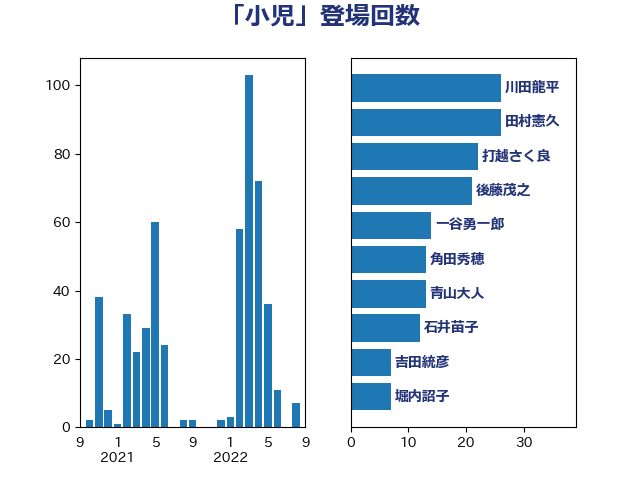

単語「小児」

| 川田龍平 | 立憲民主党 | 26 回 |
| 田村憲久 | 自由民主党 | 26 回 |
| 打越さく良 | 立憲民主党 | 22 回 |
| 後藤茂之 | 自由民主党 | 21 回 |
| 一谷勇一郎 | 日本維新の会 | 14 回 |
| 角田秀穂 | 公明党 | 13 回 |
| 青山大人 | 立憲民主党 | 13 回 |
| 石井苗子 | 日本維新の会 | 12 回 |
| 吉田統彦 | 立憲民主党 | 7 回 |
| 堀内詔子 | 自由民主党 | 7 回 |
| 山田勝彦 | 立憲民主党 | 7 回 |
| 阿部知子 | 立憲民主党 | 7 回 |
| 仁木博文 | 無所属 | 6 回 |
| 加藤勝信 | 自由民主党 | 6 回 |
| 務台俊介 | 自由民主党 | 6 回 |
| 山田賢司 | 自由民主党 | 6 回 |
| 秋野公造 | 公明党 | 6 回 |
| 竹谷とし子 | 公明党 | 6 回 |
| 蓮舫 | 立憲民主党 | 6 回 |
| 玉木雄一郎 | 国民民主党 | 5 回 |
| 羽生田俊 | 自由民主党 | 5 回 |
| 自見はなこ | 自由民主党 | 5 回 |
| 萩生田光一 | 自由民主党 | 5 回 |
| 中島克仁 | 立憲民主党 | 4 回 |
| 吉田とも代 | 日本維新の会 | 4 回 |
| 松本尚 | 自由民主党 | 4 回 |
| 西村康稔 | 自由民主党 | 4 回 |
| 佐藤英道 | 公明党 | 3 回 |
| 岸田文雄 | 自由民主党 | 3 回 |
| 斎藤嘉隆 | 立憲民主党 | 3 回 |
| 本田顕子 | 自由民主党 | 3 回 |
| 柳ヶ瀬裕文 | 日本維新の会 | 3 回 |
| 浅野哲 | 国民民主党 | 3 回 |
| 浮島智子 | 公明党 | 3 回 |
| 田村まみ | 国民民主党 | 3 回 |
| 芳賀道也 | 国民民主党 | 3 回 |
| 野間健 | 立憲民主党 | 3 回 |
| 三原じゅん子 | 自由民主党 | 2 回 |
| 古屋範子 | 公明党 | 2 回 |
| 嘉田由紀子 | 無所属 | 2 回 |
| 山際大志郎 | 自由民主党 | 2 回 |
| 石川香織 | 立憲民主党 | 2 回 |
| 若松謙維 | 公明党 | 2 回 |
| 谷田川元 | 立憲民主党 | 2 回 |
| 野田聖子 | 自由民主党 | 2 回 |
| 上野通子 | 自由民主党 | 1 回 |
| 中川貴元 | 自由民主党 | 1 回 |
| 伊佐進一 | 公明党 | 1 回 |
| 伊藤孝恵 | 国民民主党 | 1 回 |
| 伊藤孝江 | 公明党 | 1 回 |
| 伊藤渉 | 公明党 | 1 回 |
| 古川俊治 | 自由民主党 | 1 回 |
| 吉田宣弘 | 公明党 | 1 回 |
| 塩川鉄也 | 日本共産党 | 1 回 |
| 塩田博昭 | 公明党 | 1 回 |
| 大串正樹 | 自由民主党 | 1 回 |
| 大野泰正 | 自由民主党 | 1 回 |
| 安江伸夫 | 公明党 | 1 回 |
| 寺田学 | 立憲民主党 | 1 回 |
| 小泉進次郎 | 自由民主党 | 1 回 |
| 山岡達丸 | 立憲民主党 | 1 回 |
| 山田宏 | 自由民主党 | 1 回 |
| 岸真紀子 | 立憲民主党 | 1 回 |
| 斎藤アレックス | 国民民主党 | 1 回 |
| 早稲田ゆき | 立憲民主党 | 1 回 |
| 林芳正 | 自由民主党 | 1 回 |
| 森屋隆 | 立憲民主党 | 1 回 |
| 武田良太 | 自由民主党 | 1 回 |
| 畦元将吾 | 自由民主党 | 1 回 |
| 石田昌宏 | 自由民主党 | 1 回 |
| 福重隆浩 | 公明党 | 1 回 |
| 羽田次郎 | 立憲民主党 | 1 回 |
| 船橋利実 | 自由民主党 | 1 回 |
| 菅義偉 | 自由民主党 | 1 回 |
| 藤田文武 | 日本維新の会 | 1 回 |
| 西村智奈美 | 立憲民主党 | 1 回 |
| 谷合正明 | 公明党 | 1 回 |
| 足立康史 | 日本維新の会 | 1 回 |
| 近藤昭一 | 立憲民主党 | 1 回 |
| 金子恭之 | 自由民主党 | 1 回 |
| 高橋千鶴子 | 日本共産党 | 1 回 |